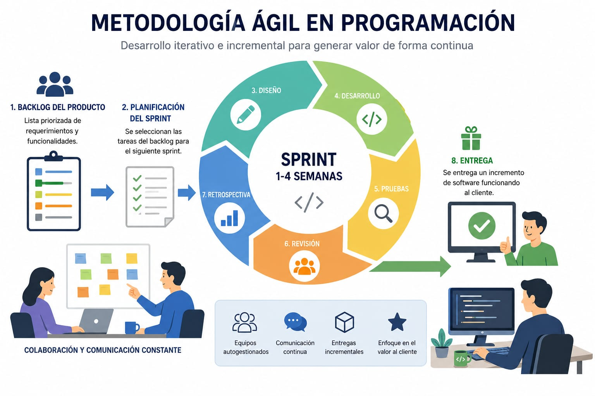

Bienvenidos a mi proyecto formativo, actualmente en una etapa inicial. Este proyecto consiste en el desarrollo de una página web para la cafetería del SENA Yamboró. Para empezar, se realizará el instructivo que se nos entregó previamente.
Al leer el instructivo y analizar los requerimientos planteados, decidí optar por la metodología ágil. ¿Por qué esta metodología? Escogí esta metodología porque nos dará una ventaja al momento de realizar algún cambio en el desarrollo del programa y mejorará la comunicación con el equipo de trabajo.

Para implementar la metodología ágil en el desarrollo del proyecto, primero se realizará una planificación inicial donde se organizarán todos los requerimientos funcionales, técnicos y no funcionales establecidos en el ERS. Después de identificar los requerimientos más importantes, se dará prioridad a módulos esenciales como el sistema de usuarios, el manejo del inventario, las ventas y la seguridad del sistema.
Para mantener una mejor organización del proyecto se utilizarán herramientas como tableros Kanban para el control de tareas y diagramas de Gantt para realizar el seguimiento de las actividades y tiempos de desarrollo.
Al finalizar cada sprint se presentarán los avances obtenidos con el fin de recibir observaciones y recomendaciones. Esto permitirá realizar mejoras continuas y ajustar el proyecto según las necesidades identificadas.
| Fase / Actives. | Descripción. | Duración (meses). | Incio. | Fin. | Tipo. |
|---|---|---|---|---|---|
| Planeación del Proyecto. | Organización inicial del proyecto y distribución de tareas. | 2. | Mes 1. | Mes 2. | planificación. |
| Analisis de requerimientos. | Identificación de necesidades y funcionalidades del sistema. | 2. | Mes 1. | Mes 2. | Análisis. |
| Diseño del Sistema | Creación de la estructura y diseño general del sistema. | 2. | Mes 2. | Mes 3. | Diseño. |
| Sprint 1: Usuarios. | Implementación del login y administración de usuarios. | 2. | Mes 3. | Mes 4. | Desarrollo. |
| Sprint 2: Inventario. | Desarrollo del módulo de productos e inventario. | 2. | Mes 4. | Mes 5. | Desarrollo. |
| Sprint 3: Ventas. | Implementación del sistema de ventas y facturación. | 2. | Mes 5. | Mes 6. | Desarrollo. |
| Sprint 4: Reportes. | Creación de reportes y control de reservas. | 2. | Mes 6. | Mes 7. | Desarrollo |
| Sprint 5: Modo Offline y Seguridad. | Implementacion del modo Offline y seguridad del sistema. | 3. | Mes 8 | Mes 10. | Desarrollo. |
| Pruebas del Sistema. | Corrección de errores y validación del funcionamiento. | 1. | Mes 11. | Mes 11. | Pruebas |
| Entrega Final. | Presentación final y capacitación básica de usuarios. | 1. | Mes 12. | Mes 12. | Implementación |
las herramientas de programación son aplicaciones o software que facilitan el proceso del desarrollo de software. estas herramientas propo rcionan un entorno de desarrollo integrado (IDE) que permite a los programadores escribir código, depurar errores, gestionar proyectos y colaborar con otros desarrolladores de manera eficiente. Estas herramientas incluyen editores de código, sistemas de control de versio nes, depuradores, compiladores, entre otros.
Además, facilitan el control del tiempo, los recursos y la calidad del sistema, garantizando que el software funcione correctamente y cumpla con los requerimientos establecidos.